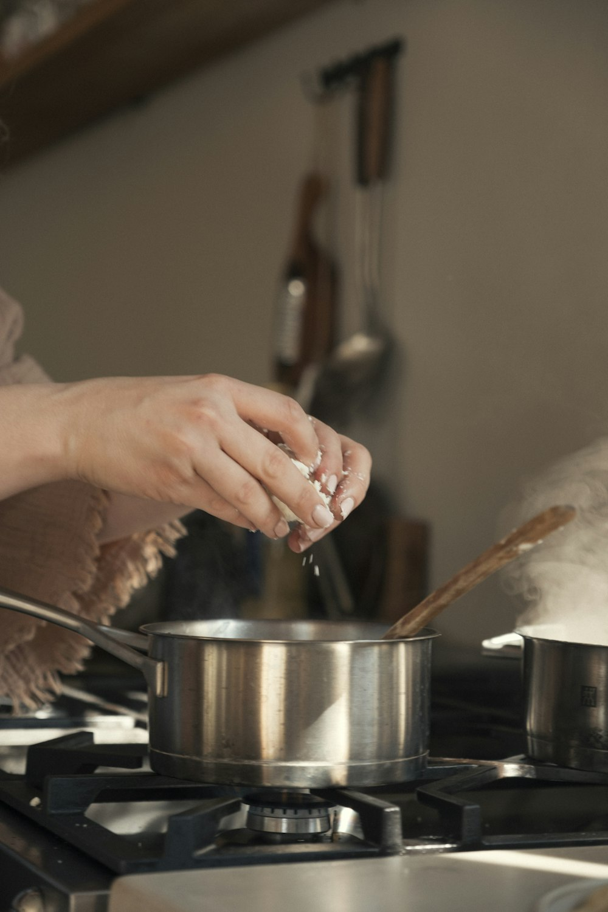

Too many tabs open in Chrome? Keep them without keeping them open
Short answer
Sort your tabs by what they're for, close the tasks you aren't working on, and keep a way to bring each one back whole. Tabs pile up because closing one feels like losing the thought behind it. Save the thought with the tabs, and closing them stops being a risk.

Why tabs pile up
Most open tabs are not being read. They are reminders: a camera you're still choosing, a trip you're planning, a bug you'll get back to. Each one holds a thought you haven't finished, and closing it feels like dropping that thought. So they stay, until the tab strip is a row of favicons and finding anything takes longer than opening it again.
The cost isn't only memory. A long tab strip hides the few tabs you need right now, and every glance at it is a reminder of everything unfinished.
What Chrome can already do
Chrome has four built-in tools that help, each with a limit worth knowing.
- Tab groups. Right-click a tab and choose Add tab to new group to name and colour a set of tabs, and collapse the group to make room. You still sort every tab by hand, and the tabs stay open.
- Bookmark all tabs. Press Ctrl+Shift+D (⌘+Shift+D on a Mac) to save every tab in the window to a new folder. Good for a clean slate; the folder doesn't remember which tabs went together for which task.
- Reading list. Right-click a tab and choose Add tab to reading list. It suits one article at a time, not a set of tabs.
- Memory Saver. In Settings → Performance, Chrome frees memory from tabs you aren't using. It helps the computer; the tab strip stays just as long.
To find one tab in a long strip without closing anything, see how to find a tab you lost.
Keep the reason, close the tabs
What's missing from all four is the reason a set of tabs is open. That is what Simmer keeps. It reads the tabs you already have and works out which belong together: from what opened what, from your Chrome tab groups, and by comparing tab titles with a small model that runs on your computer. You get a short list of things you're in the middle of, each with a name you'd recognise.
When you're done with something for now, you put the whole task on the back burner. Its tabs close and are saved first. One click brings every tab back, in its group. Mail, chat and calendars stay open by themselves, and everything Simmer does is listed under Recently with Undo.
How to clear your window with Simmer
- Add Simmer to Chrome. It opens one page and reads your open tabs. Nothing changes yet.
- Look at the list. Your tabs appear as a few things you're in the middle of, with the sites that stay open listed apart.
- Press Put away. Each task goes on the back burner and your window clears. Undo is right there.
- Bring one back when you need it. Open Simmer's side panel from the toolbar and press Bring back on a task.
Questions
- Is it bad to have a lot of tabs open in Chrome?
- It isn't harmful, but it costs memory and makes the tabs you need hard to find. Chrome's Memory Saver frees memory from tabs you aren't using; closing whole tasks you can bring back keeps the tab strip short as well.
- How do I close all my tabs without losing them?
- Bookmark them all first with Ctrl+Shift+D (⌘+Shift+D on a Mac), or let Simmer put each task on the back burner, which saves every tab before it closes and brings a whole task back in one click.
- Does Simmer decide which tabs belong together?
- Yes. It groups tabs by what opened what, by your Chrome tab groups, and by comparing tab titles on your computer. You can move a tab to another task, and Simmer remembers.